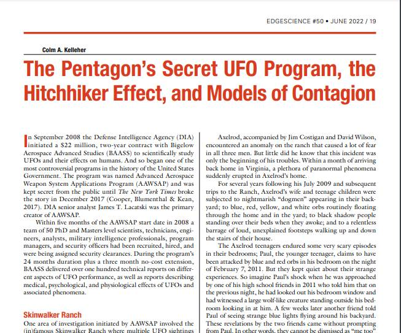

Colm A. Kelleher: 国防総省の極秘UFO計画、ヒッチハイカー効果、伝染病のモデル

前置き
有用な資料なので記録しておく。
DeepL 訳 をつけるが、完全とは言い難いので原文との対応が分かりやすいように併置しておく。
原文の在り処
Colm A. Kelleher, "The Pentagon’s Secret UFO Program, the Hitchhiker Effect, and Models of Contagion"
ref: https://www.theblackvault.com/casefiles/wp-content/uploads/2022/06/colmkelleher-edgescience.pdf
DeepL 訳
▼原文を展開
The Pentagon’s Secret UFO Program, the Hitchhiker Effect, and Models of Contagion Colm A. Kelleher In September 2008 the Defense Intelligence Agency (DIA) initiated a $22 million, two-year contract with Bigelow Aerospace Advanced Studies (BAASS) to scientifically study UFOs and their effects on humans. And so began one of the most controversial programs in the history of the United States Government. The program was named Advanced Aerospace Weapon System Applications Program (AAWSAP) and was kept secret from the public until The New York Times broke the story in December 2017 (Cooper, Blumenthal & Kean,2017). DIA senior analyst James T. Lacatski was the primary creator of AAWSAP. Within five months of the AAWSAP start date in 2008 a team of 50 PhD and Masters level scientists, technicians, engineers, analysts, military intelligence professionals, program managers, and security officers had been recruited, hired, and were being assigned security clearances. During the program’s 24 months duration plus a three month no-cost extension, BAASS delivered over one hundred technical reports on different aspects of UFO performance, as well as reports describing medical, psychological, and physiological effects of UFOs and associated phenomena.
国防総省の極秘UFO計画、ヒッチハイカー効果、伝染病のモデル
Colm A. Kelleher
2008年9月、国防情報局（DIA）は、UFOとその人間への影響を科学的に研究するため、ビゲロー・エアロスペース・アドバンスト・スタディーズ（BAASS）と2200万ドルの2年間の契約を開始した。そして、アメリカ政府の歴史の中で最も議論を呼んだプログラムのひとつが始まった。
このプログラムはAdvanced Aerospace Weapon System Applications Program（AAWSAP）と名付けられ、2017年12月にThe New York Timesが記事を掲載するまで、一般には秘密にされていた（Cooper, Blumenthal & Kean,2017 ）。
DIAの上級分析官James T. Lacatskiは、AAWSAPの主要な作成者であった。 2008年のAAWSAP開始日から5ヶ月以内に、50人の博士と修士レベルの科学者、技術者、エンジニア、アナリスト、軍事情報専門家、プログラムマネージャー、セキュリティ担当者が募集、採用され、セキュリティクリアランスが付与されていた。24ヶ月のプログラム期間と3ヶ月の無償延長の間に、BAASSは100以上の技術資料を提出しました。
BAASSは、UFOの性能のさまざまな側面に関する100以上の技術報告書、およびUFOと関連現象の医学的、心理学的、生理学的影響に関する報告書を提出しました。
▼原文を展開
Skinwalker Ranch
One area of investigation initiated by AAWSAP involved the (in)famous Skinwalker Ranch where multiple UFO sightings had taken place over decades as well as a plethora of anomalies that included cattle mutilations, sightings of orbs of different colors, discarnate entities, and poltergeist activity (Kelleher and Knapp, 2005). Shortly after the AAWSAP investigations began, the DIA deployed several military personnel on site visits to Skinwalker Ranch to corroborate and evaluate earlier reports of anomalous phenomena. Lacatski himself had experienced a profound anomaly on the ranch in 2007; this experience, in fact , was a significant instigation for the formation of the AAWSAP/BAASS program. All five DIA personnel deployed to the ranch experienced profound anomalies while on the property, and more importantly, all five “brought something home” with them. The leader of these five military personnel was a Naval Intelligence officer whom we gave the pseudonym Jonathan Axelrod in our book (Lacatski, Kelleher & Knapp, 2021). Axelrod was an accomplished engineer who would eventually be promoted to the rank of two-star admiral within Naval Intelligence and who possessed Top Secret/Sensitive Compartmented Information (TS SCI ) clearances at the time of his ranch visit in July 2009.
スキンウォーカー牧場
AAWSAPが開始した調査の1つの分野は、（中略）有名なスキンウォーカー牧場を含むもので、数十年にわたって複数のUFO目撃例があり、キャトルミューティレーション、異なる色のオーブの目撃、転生体、ポルターガイスト活動など、多くの異常が発生していた（Kelleher and Knapp、2005年）。
AAWSAPの調査が始まって間もなく、DIAは数名の軍人をスキンウォーカー牧場に派遣し、以前の異常現象の報告の裏付けと評価を行った。
ラカトスキー氏自身も2007年にこの牧場で深刻な異常を体験しており、この体験がAAWSAP/BAASSプログラム設立の重要なきっかけとなった。
この牧場に派遣された5人のDIA隊員は全員、牧場内で深刻な異常を体験し、さらに重要なことに、5人全員が「何かを家に持ち帰った」のである。
この5人の軍人のリーダーは、私たちが著書（Lacatski, Kelleher & Knapp, 2021）でJonathan Axelrodというペンネームをつけた海軍情報将校であった。
アクセルロッドは熟練した技術者で、やがて海軍情報部の二ツ星提督に昇進し、2009年7月の牧場訪問時には最高機密／機密情報（TS SCI ）のクリアランスを所持していた。
▼原文を展開
Axelrod, accompanied by Jim Costigan and David Wilson, encountered an anomaly on the ranch that caused a lot of fear in all three men. But little did he know that this incident was only the beginning of his troubles. Within a month of arriving back home in Virginia, a plethora of paranormal phenomena suddenly erupted in Axelrod’s home. For several years following his July 2009 and subsequent trips to the Ranch, Axelrod’s wife and teenage children were subjected to nightmarish “dogmen” appearing in their backyard; to blue, red, yellow, and white orbs routinely floating through the home and in the yard; to black shadow people standing over their beds when they awoke; and to a relentless barrage of loud, unexplained footsteps walking up and down the stairs of their house.
アクセルロッドは、ジム・コスティガンとデイヴィッド・ウィルソンを伴って、牧場で異変に遭遇し、3人に恐怖心を抱かせた。しかし、この事件が彼の悩みの始まりに過ぎないことを彼は知る由もなかった。バージニア州の自宅に戻ってきてから1ヵ月もしないうちに、アクセルロッドの自宅では突然、おびただしい数の超常現象が噴出したのである。
2009年7月以降の数年間、妻と10代の子供たちは、裏庭に現れる悪夢のような「犬男」、家の中や庭に浮かぶ青、赤、黄、白の球体、目覚めるとベッドの上に立つ黒い影、そして絶え間なく続く謎の大音響にさらされた。 家の階段を上り下りする原因不明の大きな足音。
▼原文を展開
The Axelrod teenagers endured some very scary episodes in their bedrooms; Paul, the younger teenager, claims to have been attacked by blue and red orbs in his bedroom on the night of February 7, 2011. But they kept quiet about their strange experiences. So imagine Paul’s shock when he was approached by one of his high school friends in 2011 who told him that on the previous night, he had looked out his bedroom window and had witnessed a large wolf-like creature standing outside his bedroom looking in at him. A few weeks later another friend told Paul of seeing strange blue lights flying around his backyard. These revelations by the two friends came without prompting from Paul. In other words, they cannot be dismissed as “me too”phenomena. The experiences by Paul’s school friends suggests that the perception of bizarre creatures and blue orbs was transferable beyond the Axelrod family home and out into the neighborhood. It’s unlikely that these events could be explained as a series of improbable coincidences. Likewise, since the Axelrod children were very reticent in discussing these experiences outside their immediate family, the incidents with their school friends cannot be dismissed as peer mimicry. The Axelrod family also suffered health effects with the wife suffering flare-ups of Systemic Lupus Erythematosus (Lupus) and Raynaud’s Disease. Both Axelrod teenagers also endured intense flu-like symptoms at different times following anomalies in their home, with the most serious medical symptoms occurring in the younger teenager.
アクセルロッドのティーンエイジャーは、寝室で非常に恐ろしいエピソードに耐えました。10代の若いポールは、2011年2月7日の夜、寝室で青と赤のオーブに襲われたと主張しています。
しかし、彼らはその奇妙な体験について黙っていた。2011年に高校時代の友人から「前の晩、寝室の窓から外を見たら、大きなオオカミのような生き物が寝室の外に立って自分を見ていた」と聞いたときのポールのショックは想像に難くない。
その数週間後、別の友人から、自分の家の裏庭を奇妙な青い光が飛んでいるのを見たという話を聞いた。
この二人の友人の証言は、ポールに促されることなく行われた。つまり、"私も "で片付けることはできない。ポールの学校の友人の体験は、奇妙な生き物や青い球体の知覚がアクセルロッド家の家を越えて近所にまで及んでいたことを示唆している。
これらの現象は、あり得ないような偶然の一致で説明されるとは考えにくい。また、アクセルロッド家の子供たちは、家族以外にはあまり話したがらなかったので、学校の友達との出来事も、仲間内の擬態として片づけることはできない。
アクセルロッド一家は、妻が全身性エリテマトーデス（Lupus）とレイノー病の発作に見舞われ、健康被害にも見舞われた。アクセルロッド一家は、妻が全身性エリテマトーデスとレイノー病を併発し、10代の子供二人も家庭内の異変からインフルエンザに似た激しい症状に見舞われた。
▼原文を展開
What was once a normal middle-class home in suburban Virginia became an inferno of unexplained phenomena. And Axelrod and his family were certain that the trigger for this transformation was his first trip to Skinwalker Ranch. Axelrod and his family can be considered the “poster children”for the eruption of anomalies in the home following trips to Skinwalker Ranch.
バージニア州の郊外にある普通の中流家庭が、説明のつかない現象の地獄と化したのである。そのきっかけをつくったのが、スキンウォーカー・ランチであることは間違いない。アクセルロッドとその家族は、スキンウォーカー・ランチへの旅行後に家庭内で異常現象が噴出することの「申し子」とも言える。
▼原文を展開
Health Effects
The Axelrods were far from alone. During the AAWSAP/BAASS program, the phenomenon of ranch visitors bringing something home with them became the rule rather than the exception. Even ranch owner and BAASS founder Robert Bigelow reported numerous anomalies and unusual activity in his home in the months and years after visiting Skinwalker Ranch. Journalist George Knapp made several visits to Skinwalker Ranch before and after the AAWSAP/BAASS investigations on Skinwalker Ranch, some lasting overnight. Subsequent to the trips, Knapp reported that his wife experienced multiple apparitions in their home, including sightings of blue orbs outside the window of their place in Las Vegas. Jim Costigan, a Marine who had accompanied Axelrod on that first visit to the ranch, and his wife experienced a very close encounter with a blue orb in their quiet Maryland neighborhood in September 2009. Her upper arm was briefly grazed by a low flying blue orb as it flew past her and disappeared into the neighborhood. Almost immediately she became ill and experienced a constellation of unusual symptoms before being eventually diagnosed with Hashimoto’s Thyroiditis, an autoimmune disease in which the immune system attacks the thyroid gland. A number of other people who became “infected” at Skinwalker Ranch also began to experience autoimmune disease in one or more family or household members. These autoimmune diseases included Graves’ Disease (thyroid), Sjogren’s syndrome (salivary and tear glands), Hashimoto Thyroiditis (thyroid), Rheumatoid Arthritis (joints), and Lupus (heart, lung, muscle). Blood dyscrasias, connective tissue and dermatological abnormalities, including those of Systemic Sclerosis, were also diagnosed in this group of experiencers. It is important to note that all of the medical diagnoses were made by at least three MDs and all brain scans and other clinical findings were reviewed independently by more than one board-certified specialist physician. George Knapp and I have separately interviewed more than 10 security officers who had spent two-week tours of duty on the ranch as a part of the AAWSAP/BAASS program, and each security officer confirmed that they had brought a paranormal infection from Skinwalker Ranch with them. The officers confirmed that they or their partners had experienced poltergeist and other paranormal activity in their homes following their tours on the ranch.
健康への影響
アクセルロッド夫妻は、決して孤独ではなかった。AAWSAP/BAASSプログラム期間中、牧場を訪れた人々が何かを持ち帰る現象は、例外ではなく、むしろルールとなった。牧場主でBAASS創設者のロバート・ビグロー氏も、スキンウォーカー牧場訪問後、数ヵ月から数年、自宅に数々の異変や異常な活動を報告した。
ジャーナリストのジョージ・ナップは、AAWSAP/BAASSによるスキン・ウォーカー・ランチの調査の前後に、何度かスキン・ウォーカー・ランチを訪れ、中には一泊するものもあった。
その後、彼の妻が、ラスベガスの自宅の窓の外で青い球体を目撃するなど、自宅で複数の幻影を経験したと報告しています。
アクセルロッドと一緒に牧場を訪れた海兵隊員のジム・コスティガンと彼の妻は、2009年9月にメリーランド州の静かな住宅街で青い球体に非常に接近した遭遇を経験しました。彼女の上腕は、低く飛んできたブルーオーブに一瞬かすめられ、彼女の前を通過して近所に消えました。
彼女はすぐに体調を崩し、さまざまな異常な症状を経験した後、最終的に橋本甲状腺炎（免疫系が甲状腺を攻撃する自己免疫疾患）と診断されました。
このほかにも、スキンウォーカー・ランチで「感染」した人たちの多くが、家族や親戚に自己免疫疾患を発症している。これらの自己免疫疾患には、バセドウ病（甲状腺）、シェーグレン症候群（唾液腺と涙腺）、橋本甲状腺炎（甲状腺）、関節リウマチ（関節）、ループス（心臓、肺、筋肉）などがあった。
また、全身性硬化症を含む血液異常、結合組織異常、皮膚異常もこの体験者グループに診断された。重要なことは、すべての医学的診断は少なくとも3人の医学博士によってなされ、すべての脳スキャンとその他の臨床所見は、複数の認定専門医によって独立して検討されていることである。
ジョージ・ナップ氏と私は、AAWSAP/BAASSプログラムの一環として、牧場で2週間の任務についていた10人以上の保安官と個別に面談し、保安官がそれぞれ、スキンウォーカー牧場から超常的な感染症を持ち込んでいたことを確認した。その結果、自分自身やパートナーが、牧場での任務の後、自宅でポルターガイストやその他の超常現象を体験していることが確認された。
▼原文を展開
Lacatski himself and his wife experienced a few, but not many, anomalies in their home in the years following his Skinwalker Ranch experience. But DIA official Susanna Ash, who was hired at the Defense Warning Office in January 2011 and sat in the office cubicle at DIA next to Jim Lacatski between February and June 2011, reported that on the night of February 6, 2011, Eddie Ash, Susanna’s brother who previously had no experience whatsoever with anomalies, had an escalating series of close encounters with UAPs in rural Mocksville, North Carolina, that continued for months afterwards. Eddie’s quiet country home suddenly had large orange UAPs hovering outside at night. Aerial photos of his house were sent to his mobile phone from unknown numbers. And his pet dog once disappeared (through multiple locked doors) while Eddie slept, only to be found in the morning whimpering outside. After Robert Bigelow sold the Skinwalker Ranch to Utah real estate mogul Brandon Fugal in April 2016, Fugal installed a multidisciplinary team of scientific talent and instrumentation on the property to continue the scientific investigations of the ranch anomalies. Brandon Fugal’s team corroborated many of the anomalies experienced by AAWSAP and by National Institute for Discovery Science (NIDS) personnel. In 2020 the History Channel began airing TV documentary episodes entitled “The Secret of Skinwalker Ranch.” Many anecdotal reports began emerging regarding individuals on Skinwalker Ranch “bringing something home” with them in the past few years.
ラカツキー自身と彼の妻は、スキンウォーカー・ランチ体験後の数年間、自宅での異常事態をいくつか、しかし多く経験している。しかし、2011年1月に国防警報局に採用され、2011年2月から6月までDIAでジム・ラカツキーの隣の事務室に座っていたDIA職員のスザンナ・アッシュは、2011年2月6日の夜、それまで全く異常の経験がなかったスザンナの弟エディ・アッシュがノースカロライナ州のモックスヴィルの田舎でUAPSとの接近遭遇がエスカレートし、その後数ヶ月続いたことを報告しています。
エディの静かな田舎の家では、夜になると突然、大きなオレンジ色のUAPが外をホバリングするようになった。彼の携帯電話には、見知らぬ番号から自宅の空撮写真が送られてきた。また、ペットの犬がエディーの寝ている間に姿を消し、朝になって外で鳴いているのを発見されたこともあった。
ロバート・ビゲローが2016年4月にスキンウォーカー牧場をユタ州の不動産王ブランドン・フーガルに売却した後、フーガルは科学的才能と計測器を備えた学際的チームを敷地内に設置し、牧場の異常の科学調査を継続することにしました。
ブランドン・フーガルのチームは、AAWSAPと国立発見科学研究所（NIDS）の職員が体験した異常の多くを裏付けました。2020年、ヒストリーチャンネルが "スキンウォーカー牧場の秘密 "と題したテレビドキュメンタリーを放映し始めた。この数年、スキンウォーカー・ランチに滞在する人々が「何かを家に持ち帰った」という逸話が多数報告されるようになった。
▼原文を展開
The Hitchhiker Effect
This feeling of “bringing something home” and the subsequent person to person transmissibility of paranormal phenomena, some of which can last for years, has been named the Hitchhiker Effect. In an April 2022 interview, Skinwalker Ranch research team member Dr. Jim Segala addressed the Hitchhiker phenomenon: “Over the past five years, it has been our experience that when people interact with the phenomena and do not treat the phenomena with respect, that’s when we see a higher rate of the Hitchhiker Syndrome. Symptoms experienced by people range from acute neurological injuries to chronic blood disease. Those who have told us that they have brought home a souvenir often have some type of illness as well as family members. The data again comes from years of tracking and collecting data from those who have come forward.”(Sinclair, 2022) Segala’s description mirrors many of the Hitchhiker symptoms experienced by victims and documented during the AAWSAP program and provides additional details on the medical sequelae of the Hitchhiker Effect. But the Hitchhiker Effect is not unique to Skinwalker Ranch. The AAWSAP research team found that even close encounters with UFOs in locations unrelated to Skinwalker Ranch produced a version of the Hitchhiker Effect. This was not always the case but did occur especially when the experiencers were followed and regularly interviewed by the AAWSAP team over long periods of time.
ヒッチハイカー効果
この「何かを家に持ち帰る」という感覚と、それに続く超常現象の人から人への伝達性（中には何年も続くものもある）は、ヒッチハイカー効果と名付けられました。2022年4月のインタビューで、スキンウォーカー・ランチの研究チームメンバーであるジム・セガラ博士は、このヒッチハイカー現象について次のように語っている。過去5年間の経験では、人々が現象と関わり、現象を敬意を持って扱わないとき、ヒッチハイカー症候群の発生率が高くなります。
急性神経損傷から慢性血液疾患まで、人によって経験する症状はさまざまです。お土産を持ち帰ったという人は、家族同様、何らかの病気を持っていることが多いようです。このデータもまた、何年にもわたる追跡調査と、名乗り出た人々のデータ収集から得られたものです」（Sinclair, 2022） Segalaの記述は、被害者が経験し、AAWSAPプログラム中に記録されたヒッチハイカーの症状の多くを反映し、さらに詳細な情報を提供しています。 ヒッチハイカー効果の医学的後遺症に関する追加情報を提供している。
しかし、ヒッチハイカー効果は、スキンウォーカー・ランチに限ったことではない。AAWSAPの研究チームは、スキンウォーカー・ランチとは無関係の場所でUFOに接近遭遇した場合でさえ、ヒッチハイカー効果のバージョンが生じることを発見した。この現象は常に起こるわけではないが、特に体験者を長期間にわたって追跡し、定期的にAAWSAPチームがインタビューした場合に発生した。
▼原文を展開
For example, biotechnologist Ron Becker and his daughter were travelling outside Bend Oregon in May 2005 when his daughter noticed three blue-colored objects moving randomly in a field close to the highway. The objects quickly flew towards the vehicle, one went in front, one went through the car and flew across the dashboard, and the third entered Ron Becker’s shoulder, maneuvered through his thoracic area and exited his shoulder as his horrified daughter watched. Ron Becker subsequently came down with a constellation of medical symptoms. Becker’s daughter, although shocked and disturbed by the incident, was not medically injured. When she returned to the home in Connecticut that she shared with her three college roommates, a paranormal frenzy seemed to erupt in the home with her friends waking up to find dark shadowy humanoid figures crouching over their beds and extensive poltergeist activity in the home, especially heavy footsteps traipsing up and down the stairs at night. Becker or her college friends had never experienced any activity in that home prior to her close encounter with the blue orbs.
例えば、生物工学者のロン・ベッカーと彼の娘が2005年5月にオレゴン州ベンド郊外を旅行していたとき、彼の娘は高速道路近くの野原で3つの青い色の物体がランダムに動いているのに気づきました。その物体はすぐに車に向かって飛んできて、1つは前に、1つは車を突き抜けてダッシュボードを横切り、3つ目はロン・ベッカーの肩に入り、胸部を通過して肩から外に出て、娘が恐る恐るそれを見ていました。ベッカーはその後、さまざまな症状を呈した。
ベッカーの娘は、この事件にショックを受け動揺していましたが、医学的な損傷はありませんでした。ベッカーが大学のルームメイト3人と住んでいたコネチカットの家に戻ると、超常現象が発生したようで、友人たちが目を覚ますと、ベッドの上に暗い影のような人影がしゃがんでいたり、家の中でポルターガイスト活動が盛んになり、特に夜中に階段を上り下りしている重い足音が聞こえるようになったそうです。ベッカーや彼女の大学の友人たちは、青い球体に遭遇するまでは、その家でどんな活動も経験したことがありませんでした。
▼原文を展開
Poltergeists and Contagion
Darren W. Ritson’s recent thought-provoking book on poltergeists and contagion (Ritson, 2021) depicts evidence for a transmissibility phenomenon that occurred with the infamous South Shields, UK poltergeist case of 2006 and aftermath. The book described in great detail the disturbing effects of a poltergeist that “infested” a home in South Shields, a small village in northeast England during 2006 and 2007. Ritson and his colleague/co-investigator Michael Hallowell recounted many anomalous events, the majority of which overlapped with phenomena that had been reported on Skinwalker Ranch, including “windows opening and shutting repeatedly, appearances of anomalous black shapes, sounds of footsteps in the loft, banging and thumping noises in the bedrooms, people being pushed violently from behind, discarnate voices, objects being moved around.” Ritson goes on to describe “a process whereby the bizarre antics of the poltergeist spread outwards from the home of the principal witnesses and start to affect others around them; extended family members, friends, colleagues and investigators who choose, or accidentally wander into, the arena of metaphysical conflict. Like a communicable disease, the poltergeist phenomenon can attach itself to others.” Ritson’s words echo the experiences of the AAWSAP investigators on the Skinwalker Ranch in detail. Through delineating multiple additional cases, Darren Ritson provides further evidence that poltergeist contagion is possibly quite common and underreported.
ポルターガイストと伝染
ダレン・W・リトソンのポルターガイストと伝染に関する示唆に富む最近の著書（Ritson, 2021）には、2006年とその後に起きた悪名高い英国サウス・シールズのポルターガイスト事件で起きた伝染現象の証拠が描かれている。本書では、2006年から2007年にかけて、イングランド北東部の小さな村、サウスシールズの家に「はびこる」ポルターガイストの不穏な影響が詳細に描かれていた。
リッソンと同僚で共同調査員のマイケル・ハロウェルは、「窓が何度も開いたり閉じたりする、黒い異常な形状の出現、ロフトでの足音、寝室でのバンバンという音、人が後ろから激しく押される、化身の声、物が移動する」など、スキンウォーカーランチで報告されていた現象と重なる多くの異常な出来事について語っている。"と。
ポルターガイストの奇妙な行動が、主要な目撃者の家から外へと広がり、その周囲の人々、つまり、形而上学的な対立の場を選んだり、偶然にそこに迷い込んだりした大家族、友人、同僚、調査員などに影響を与え始める過程について、リトソンはさらに説明しています。
ポルターガイスト現象は、伝染病と同じように、他の人に影響を与えることがあるのです」。リトソンの言葉は、AAWSAPの調査員たちがスキンウォーカー牧場で経験したことを詳細に反映している。ダレン・リトソンは、ポルターガイストの伝染が極めて一般的であり、かつ報告されていないことを、複数の追加事例を通じて、さらに立証している。
▼原文を展開
Previous Evidence of Transmissibility
In 1973, when noted illusionist and psychokinetic practitioner Uri Geller was undergoing a series of tests of his psychic abilities at the prestigious Lawrence Livermore National Laboratory (LLNL), a series of bizarre events began to unfold both in the lab itself and at the homes of the scientists who were conducting the studies. As with Skinwalker Ranch visitors, many of the researchers involved had the highest level of security clearances, including Special Access Program (SAP) clearances that necessitated polygraph testing as well as frequent personality evaluations. Author Jim Schnabel, in his engaging history of American psychic spies (Schnabel, 1997), recounts the bizarre series of events that unfolded at the lab when scientists began to “measure” Uri Geller’s alleged psychic abilities. Writes Schnabel: “Peter Crane and some of the others in the Livermore group quickly found themselves involved in more strangeness than they could handle. In the days and weeks that followed, they began to feel that they were collectively possessed by some kind of tormenting, teasing, hallucination-inducing spirit. They all would be in a laboratory together, setting up some experiment, or one of the fellows and his wife and children would be at home, just sitting around, when suddenly there in the middle of the room would be a weird, hovering, almost comically stereotypical image of a flying saucer… On the other hand, the flying saucer wasn’t the only form the Livermore visions took. There were sometimes animals—fantastic animals from the ecstatic lore of shamans—such as the large raven-like birds that were seen traipsing through the yards of several members of the group. One of them appeared briefly to a physicist named Mike Russo and his terrified wife. The two were lying around one morning when suddenly there was this giant bird staring at them from the foot of their bed. After a few weeks of this, Russo and some of the others began seriously to wonder if they were losing their sanity.” Other scientists and their families saw orbs and black shadowy forms in their homes.
伝達可能性の過去の証拠
1973年、著名なイリュージョニストでサイコキネシスの実践者であるユリ・ゲラーが、権威あるローレンス・リバモア国立研究所（LLNL）で一連のサイキック能力のテストを受けていたとき、研究所内と研究を進めていた科学者の自宅で、一連の奇妙な出来事が起こりはじめた。スキンウォーカー牧場の訪問者と同様、研究者の多くは、ポリグラフテストや頻繁な人物評価を必要とする特別アクセスプログラム（SAP）許可を含む、最高レベルのセキュリティ許可を持っていた。
作家のジム・シュナーベルは、アメリカの超能力スパイの魅力的な歴史（Schnabel, 1997）の中で、科学者がユリ・ゲラーの超能力を「測定」し始めたとき、研究所で展開された一連の奇妙な出来事について述べている。シュナーベルはこう書いている。「ピーター・クレーンとリバモアのグループの他の数人は、すぐに自分たちの手に負えないほどの奇妙なことに巻き込まれることになった。それからの数日間、数週間、彼らは自分たちが集団で、ある種の苦しめる、からかう、幻覚を誘発する霊に取り憑かれていると感じるようになった。
研究室で実験をしている時、あるいは研究員の一人とその妻や子供が家で座っている時、突然、部屋の真ん中に奇妙な空飛ぶ円盤の映像が浮かんできたり、ほとんどコミカルなステレオタイプな映像が現れたりした。
例えば、大きなカラスのような鳥が、何人かのメンバーの家の庭を歩いているのを見た。そのうちの一羽が、マイク・ルッソという物理学者と彼の恐妻の前に姿を現した。ある朝、二人が寝転がっていると、突然ベッドの足元からこの巨大な鳥が二人をじっと見ていた。数週間後、このようなことがあった。
ルッソと他の何人かは、自分たちが正気を失っているのではないかと真剣に思い始めた。他の科学者やその家族も、家の中でオーブや黒い影のようなものを見たそうです。
▼原文を展開
There are some interesting overlaps between the events at Lawrence Livermore in 1973 and those that occurred at the Axelrod’s residence and at the homes of other Skinwalker Ranch visitors some 37 years later. In both, the central “victims” were individuals with highest level clearances and are/were working in senior position levels in several government agencies. In both, an initial “psychic” trigger (Uri Geller to Livermore and Axelrod’s or Costigan’s visit to the ranch) plunged multiple people, and their families, into a netherworld where high strangeness events unfolded. In both, balls of light presented unexpectedly to family members. In both, bizarre, archetypal, mythological animals and birds manifested. In both, multiple poltergeist-like phenomena affected families. In both, the experiences appeared to be centered near bedrooms, hallways, and backyards of homes involved. In both, black rectangles (Axelrod, Witt) or black cubes (Livermore scientists) were involved. Intriguingly, physicist Hal Puthoff was a central player in both the Lawrence Livermore and, as an AAWSAP BAASS consultant and contractor, in the Axelrod and other post Skinwalker Ranch incidents.
1973年のローレンス・リバモアでの事件と、その37年後にアクセルロッド邸や他のスキンウォーカーランチ訪問者の家で起こった事件には、興味深い重複がある。どちらの事件でも、中心的な「犠牲者」は最高レベルのクリアランスを持つ人物で、いくつかの政府機関の上級職に就いている（または就いていた）。どちらも、最初の「心霊現象」（ユリ・ゲラーとリバモア、アクセルロッドまたはコスティガンの牧場訪問）がきっかけで、複数の人々とその家族が、異様な出来事が展開される冥界に突入した。
どちらも、光の玉が不意に家族の前に現れた。奇妙な、原型をとどめない、神話に登場する動物や鳥が現れた。ポルターガイストのような現象が何度も家族に起こる。どちらも、寝室、廊下、裏庭の近くに現れる。どちらも黒い長方形（アクセルロッド、ウィット）または黒い立方体（リバモアの科学者）が関与していた。興味深いことに、物理学者のHal Puthoffは、ローレンス・リバモアと、AAWSAP BAASSコンサルタントおよび請負業者として、アクセルロッドと他のスキンウォーカーランチ後の事件の中心人物であった。
▼原文を展開
Infectious Agent Model
During 2020 and 2021 everyone in the world became familiar with the jargon of coronavirus infectious disease modelling. After thousands of newspaper, TV, and digital media reports detailed the first COVID-19 index cases in Washington state, Wuhan, California, and New York, the concept of an index case for an infectious disease became familiar to everyone. Just as the Wuhan Institute of Virology or the wet markets in China may have been the source of the COVID-19 outbreak, could Skinwalker Ranch be the source of an infectious agent of some kind? The experiences of Axelrod and others have led me to consider an infectious disease model to try to shed some light on the phenomena, as they bore a striking resemblance to the transmission of an infectious agent between individuals. The “symptoms” of the “infection” comprised the eruption of poltergeist and other paranormal events in the immediate environment of the newly infected individual. Utilizing this terminology, Axelrod was the index case who was first “infected” on Skinwalker Ranch and carried the infectious agent 2,000 miles home to Virginia with him. Within a few days or weeks, the agent had spread from Axelrod to his wife and both his teenage sons, and all three began experiencing a bewildering diversity of anomalies in their home. Within a few more weeks the infectious agent had spread to the neighborhood and infected two teenage friends, probably at school, who lived within a couple of miles of the Axelrod home. It should be noted that the symptoms of infection from Skinwalker Ranch are not respiratory distress or death, as with COVID-19, but rather profoundly altered perceptual environments. In standard infectious disease parlance, the basic reproduction number (denoted by R0) is a measure of how transmissible a disease is. It is the average number of people that a single infectious person will infect over the course of their infection. In the “Axelrod outbreak,” the basic reproduction number R0 could be denoted as 3. Therefore, any study of the putative transmission of the Skinwalker Ranch infectious entity would be very amenable to standard infectious disease modeling. The tools of infectious disease modelling are well established. It goes without saying that the number of people involved in these observations are too few to draw any firm conclusions, but the metaphor of an infectious disease could be a useful one for future research on the Hitchhiker Effect. Obviously, in order to drill down into this infectious disease possibility, a much larger epidemiological modeling effort would have to be initiated, one in which every individual and their family members who spent time on Skinwalker Ranch could be followed closely and interviewed every few months over a several year period.
感染症モデル
2020年から2021年にかけて、世界中の誰もがコロナウイルス感染症モデルの専門用語に精通するようになりました。何千もの新聞、テレビ、デジタルメディアがワシントン州、武漢、カリフォルニア州、ニューヨークでの最初のCOVID-19指標症例を詳細に報道した後、感染症の指標症という概念は誰にとっても身近なものになったのです。
武漢ウイルス研究所や中国のウェットマーケットが「COVID-19」の発生源であるように、スキンウォーカー牧場が何らかの感染症の発生源である可能性はないだろうか。アクセルロッドらの経験から、この現象が個人間の感染症の伝播と酷似していることから、私は感染症モデルを考えて、その解明を試みました。
その「感染」の「症状」は、感染したばかりの個人の周辺にポルターガイストなどの超常現象を噴出させることである。
アクセルロッドは、スキンウォーカー・ランチで最初に感染し、2000マイル離れたバージニア州までその感染因子を持ち帰った、この用語でいうところのインデックス・ケースである。数日から数週間のうちに、感染体はアクセルロッドから彼の妻と彼の10代の息子たちに広がり、3人とも家庭内で不可解な多様な異常を経験するようになった。
さらに数週間のうちに、この感染体は近所に広がり、アクセルロッド宅から数キロ以内に住んでいた10代の友人2人（おそらく学校）に感染した。スキンウォーカー・ランチからの感染症状は、COVID-19のように呼吸困難や死亡ではなく、知覚環境が深く変化することに注目すべきだろう。
標準的な感染症の用語で、基本再生産数（R0と表記）は、ある病気がどの程度伝染するかを示す指標である。これは、一人の感染者が、その感染期間中に感染させる人数の平均値である。したがって、「スキンウォーカー・ランチ」の感染に関する研究は、標準的な感染症モデリングに非常に適していると考えられる。感染症モデリングのツールは十分に確立されている。
これらの観察に関わった人数が少なすぎるため、確固とした結論を導き出せないことは言うまでもないが、感染症というメタファーは、ヒッチハイカー効果の今後の研究にとって有用であろう。
もちろん、この感染症の可能性を掘り下げるには、もっと大規模な疫学的モデル化が必要である。スキンウォーカー牧場で過ごしたすべての個人とその家族を、数年にわたり数ヶ月ごとに追跡調査し、聞き取りを行う必要がある。
▼原文を展開
Social Contagion Model
An interesting paper by Ben Green, Thibaut Horel, and Andrew V. Papachristos published in the Journal of the American Medical Association in 2017 showed that gunshot violence follows an epidemic-like process of social contagion that is transmitted through networks of people by social interactions. The objective of the study was to evaluate the extent to which the people who will become subjects of gun violence in Chicago can be predicted by modeling gun violence as an epidemic that is transmitted between individuals through social interactions. According to the results, “social contagion”accounted for 63.1% of the 11,123 gunshot violence episodes in Chicago; subjects of gun violence were shot on average 125 days after contact with their “infector,” the person most responsible for exposing the subject to gunshot violence. Some subjects of gun violence were shot more than once. The authors write: “Our findings suggest that the diffusion of violence follows an epidemic-like process of social contagion that is transmitted through networks by social interactions.” In other words, the transmission of violence, although not an infectious entity, follows a predictable social contagion model that is amenable to analysis and, subsequently, to intervention. Regardless of the epidemiological model utilized (infectious agent or social contagion), the central point is that the AAWSAP program on Skinwalker Ranch was the first to unmask a transmission-like phenomenon that was occurring in individuals who visited the ranch, and that this transmission is probably amenable to analysis utilizing standard infectious disease or social contagion modelling. Further, in some cases, the transmission into some households was correlated with the emergence of autoimmune disease in family members. Hence in these post-Skinwalker Ranch contagions, if social contagion is the appropriate modelling template, then social contagion in these cases has biological consequences.
社会的伝染モデル
2017年にJournal of the American Medical Associationに掲載されたBen Green, Thibaut Horel, Andrew V. Papachristosによる興味深い論文では、銃による暴力は社会的相互作用によって人々のネットワークを通じて伝染する、社会伝染病のような過程をたどることが示されています。本研究の目的は、銃乱射を社会的相互作用によって個人間を伝播する伝染病としてモデル化することで、シカゴで銃乱射の対象となる人々をどの程度予測できるかを評価することであった。その結果，シカゴで発生した11,123件の銃乱射事件の63.1%が「社会伝染」であり，銃乱射事件の対象者は，「感染者」（対象者を銃乱射事件に巻き込んだ最大の責任者）との接触から平均125日後に撃たれていることが明らかになった．銃による暴力の対象者の中には、複数回撃たれた者もいた。
著者らは次のように書いている。"我々の発見は、暴力の拡散が、社会的相互作用によってネットワークを介して伝達される社会伝染病のような過程をたどることを示唆している"。言い換えれば、暴力の伝播は、感染体ではないものの、予測可能な社会伝染モデルに従っており、分析に適し、その後、介入することができるのである。
疫学的モデル（感染症か社会伝染病か）にかかわらず、スキンウォーカー牧場でのAAWSAPプログラムは、牧場を訪れる人々に起きている感染症のような現象を初めて明らかにしたこと、そしてこの感染症はおそらく標準的な感染症モデルや社会伝染病モデルを用いて分析可能であるということが中心的なポイントである。さらに、ある家庭での感染は、家族の自己免疫疾患の発生と相関しているケースもあった。したがって、もし社会伝染が適切なモデリング・テンプレートであるならば、スキンウォーカー・ランチ後のこれらの伝染では、社会伝染が生物学的影響を及ぼしていることになる。
▼原文を展開
Other Models of Social Contagion
A number of authors have sought to develop or challenge the simple network model of social contagion. Those seeking to develop this model have suggested that a more satisfying model of contagious social behavior requires a more layered account of the nature of social contact (Thompson, T., Personal Communication). Harvard University’s Damon Centola and Cornell University’s Michael Macy (2007) distinguished between “simple” and “complex” social contagions, arguing that the latter requires contact with more than one infected carrier. British mathematician Iacopo Iacopini and colleagues developed a model that combines stochastic processes of simple contagion and of complex contagion occurring through group interactions in which an individual is simultaneously exposed to multiple sources of contagion (Iacopini et al., 2019). These authors created simulations from contact data from four separate real-world situations: a workplace, a conference, a hospital, and a high school. These higher order interactions of social contagion might eventually be applied to model data from hitchhiker attachments.
社会的伝染の他のモデル
多くの著者が、社会伝染の単純なネットワークモデルを発展させたり、それに挑戦したりしている。このモデルを発展させようとしている人々は、伝染性の社会的行動のより満足のいくモデルには、社会的接触の性質についてのより重層的な説明が必要であることを示唆している（Thompson, T., Personal Communication）。ハーバード大学の Damon Centola とコーネル大学の Michael Macy (2007) は、社会的伝染を「単純」と「複雑」に区別し、後者は複数の感染キャリアとの接触を必要とすると論じている。
イギリスの数学者Iacopo Iacopiniらは、単純な伝染の確率過程と、個人が複数の伝染源に同時にさらされる集団相互作用によって起こる複雑な伝染の確率過程を組み合わせたモデルを開発した（Iacopini et al.、2019年）。これらの著者らは、職場、会議、病院、高校という4つの別々の実世界の状況からの接触データからシミュレーションを作成しました。こうした社会伝染の高次の相互作用は、いずれヒッチハイカーのアタッチメントからのモデルデータに適用されるかもしれない。
▼原文を展開
Future Research
Following the June 25, 2021, announcement by the Office of the Director of National Intelligence (ODNI) that UFOs are real and may constitute an air safety threat and even a national security problem, much public interest has been focused on what a future program investigating both UFO performance and UFO effects on human beings might look like. During such a study, if additional examples of a Hitchhiker Effect were discovered, several paths for future research could be explored. An epidemiological infectious agent model could be adopted. Provided the number of cases was sufficiently large in a new study, formally measuring the basic reproduction number (R0) of the hitchhiker “infections” would be feasible. Such a study could utilize some of the most useful epidemiological parameters defined for COVID (Gallo et al 2020). For example, measurement of time between infection and onset of symptoms (aka incubation period) will be possible. The definition of the contagion’s transmissibility period, the time during which an infected person transmits the infectious entity to other people, would also be achievable. Definition of any illnesses in families, school friends, or neighbors associated with hitchhiker transference would add to the research picture of the transmissibility phenomenon. The links between biological and social contagion could be explored. Social contagion is similar to biological contagion—both spread through a replication process that is heedless of the consequences for the individual, and if each person transmits to more than one person, the rapid pace of exponential growth creates an epidemic (Bauch and Galvani, 2013). In the Skinwalker Ranch cases cited above, the development of autoimmune disease in several of the families suffering the Hitchhiker Effect was observed by AAWSAP researchers. Whether autoimmune disease development in these families was caused by “hitchhikers” is unknown, although links between stress-related disorders and autoimmune disease are well known (Song et al. 2018). Future research could also allow us to test various hypotheses on the mechanism involved in the Hitchhiker Effect. The common denominator with people who experience the effects of bringing something home is not respiratory distress, hemorrhagic fever, or other symptoms of viral infection. Alterations in a person’s perceptual environment appears to be the most common manifestation. Symptoms include waking up with black shadow humanoids standing over their beds; various types of poltergeist activity; colored orbs flying through people’s bedrooms and homes at night; apparitions of dead children or adults; unexplained loud noises around the house; and much more.
今後の研究
2021年6月25日、国家情報長官室（ODNI）がUFOは実在し、航空安全の脅威、さらには国家安全保障上の問題を構成するかもしれないと発表した後、多くの国民の関心は、UFOの性能と人間に対するUFOの影響の両方を調査する将来のプログラムがどのようなものになるか、に集まっている。このような研究の中で、もしヒッチハイカー効果の新たな例が発見された場合、将来の研究のためのいくつかの道が模索されるでしょう。
疫学的な感染症モデルを採用することができる。新しい研究において、症例数が十分に多ければ、ヒッチハイカー「感染」の基本再生産数（R0）を正式に測定することが可能であろう。このような研究では、COVIDについて定義された最も有用な疫学的パラメータのいくつかを利用することができる（Gallo et al 2020）。例えば、感染から症状発現までの時間（別名、潜伏期間）の測定が可能になる。また、感染者が他の人に感染体を伝播する期間である伝染力の伝播期間の定義も実現可能でしょう。家族、学校の友人、隣人など、ヒッチハイカーの伝染に関連する病気の定義ができれば、伝染現象の研究像がより鮮明になる。
生物学的伝染と社会的伝染の関連性を探ることができるだろう。社会伝染は生物学的伝染と似ている-どちらも個人への影響を無視した複製プロセスによって広がり、各人が複数の人に伝染させると、指数関数的な成長の急速なペースが伝染病を生み出す（Bauch and Galvani, 2013）。
先に引用したスキンウォーカー牧場の事例では、ヒッチハイカー効果に苦しむ家族のうち、複数の家族で自己免疫疾患の発症がAAWSAPの研究者によって観察された。これらの家族における自己免疫疾患の発症が「ヒッチハイカー」によって引き起こされたかどうかは不明ですが、ストレス関連疾患と自己免疫疾患の関連性はよく知られています（Song et al.2018）。
今後の研究により、ヒッチハイカー効果に関与するメカニズムに関する様々な仮説を検証することも可能である。何かを家に持ち帰ったことによる影響を経験する人々との共通点は、呼吸困難や出血熱などのウイルス感染症の症状ではありません。知覚環境の変化が最も一般的な症状であるように思われる。症状としては、ベッドの上に立つ黒い影のヒューマノイドで目が覚める、様々なタイプのポルターガイスト活動、夜間に寝室や家の中を飛ぶ色のついた球体、死んだ子供や大人の幽霊、家の周りの原因不明の大きな音、その他多数があります。
▼原文を展開
The Role of Consciousness
Alterations in human perception as a result of being “infected”suggest that some of the new models of human consciousness proposed by luminaries such as philosopher-computer scientist Bernardo Kastrup (Kastrup 2019), University of California Irvine professor Donald Hoffman (Hoffman, 2020), Rice University professor Jeffrey Kripal (Kripal, 2019), microchip inventor Federico Faggin (Faggin, 2021), University of Virginia professor Edward Kelly (Kelly et al 2015), and stem cell biologist Robert Lanza (Lanza et al. 2020) may be relevant. The proposal that consciousness is “prime” and actually undergirds physical reality and is not emergent from neurochemical trafficking in the brain is fundamental to this new viewpoint. One implication of the new perspective on human consciousness is that the brain may act as a “filter” of consciousness, as proposed by Aldous Huxley (Huxley, 1954). Bernardo Kastrup emphasizes that psychedelics decrease brain activity while the individual paradoxically undergoes extremely intense perceptual activity (Kastrup, 2021). He writes: “…in all cases, the physiological effect of the psychedelic is to reduce brain activity, particularly in the so-called ‘default mode network,’which is correlated with our ego or sense of individual identity. The phenomenological effect, on the other hand, is one of the richest and most intense experiences a human being can possibly have. If one’s brain is effectively going to sleep during those experiences, where are the experiences then coming from?”Kastrup’s question is a good one, and measurable brain alterations, including quiescence, may be one investigative readout for looking at Hitchhiker Effects on the human brain as a part of a future UFO program.
意識の役割
感染」による人間の知覚の変化は、哲学者・コンピューター科学者のベルナルド・カストラップ（Kastrup 2019）、カリフォルニア大学アーバイン校教授のドナルド・ホフマン（Hoffman 2020）、ライス大学教授のジェフリー・クリパール（Kripal 2019）、マイクロチップ発明者のフェデリコ・ファギン（Faggin 2021）、バージニア大学教授のエドワード・ケリー（Kelly et al 2015）、幹細胞生物学者のロバート・ランツァ（Lanza et al. 2020）が関連しているかもしれない。意識は「素」であり、実際に物理的現実を支えており、脳内の神経化学的トラフィッキングから創発されたものではないという提案は、この新しい視点の根幹をなすものである。
人間の意識に関する新しい視点の一つの含意は、Aldous Huxley (Huxley, 1954) が提案したように、脳が意識の「フィルター」として機能する可能性があるということである。ベルナルド・カストラップは、サイケデリックが脳の活動を低下させる一方で、個人は逆説的に極めて激しい知覚活動を受けることを強調している（Kastrup, 2021）。彼は、「...どのような場合でも、サイケデリックの生理学的効果は、脳の活動、特に私たちの自我や個人のアイデンティティーの感覚と相関している、いわゆる『デフォルトモードネットワーク』の活動を低下させることである」と書いています。
一方、現象学的な効果は、人間が経験しうる最も豊かで強烈な体験の一つである。もし、そのような体験をしている間、脳が事実上眠っているとしたら、その体験はどこから来るのでしょうか」カストルプの質問は良いもので、静止状態を含む測定可能な脳の変化は、将来のUFOプログラムの一環として、人間の脳に対するヒッチハイカー効果を調べるための一つの研究材料になるかもしれません。
▼原文を展開
Once the hitchhiker “attaches” to or infects a new victim, can it play a role in manipulating or inhibiting the normal mode of the brain in filtering out reality in much the same way as psychedelics allegedly reduce the brain’s screening capability? (Luke, 2022; Swanson, 2018) In a future research program, assuming a sufficiently large number of cases with adequate statistical power, researchers could test and measure the effects of a hitchhiker infection on victims. The brain imaging studies on experiencers and family members conducted as a part of the AAWSAP 2008-2010 program could be significantly expanded to specifically test whether experiencers and family members showed unusual brain activity or structure when compared to controls. Issues of looking at brain biomarkers have been ongoing, and a number of papers have already been submitted for peer reviewed publication (Green, C.C., Personal communication). The Pentagon’s secret AAWSAP program pioneered a dual track approach of investigating UFO performance and technical characteristics while simultaneously researching effects of UFOs on humans and thus successfully created a new innovative template for future US Government UFO programs. Whether this template is capable of being utilized again remains to be seen. This excerpt is adapted and expanded from Skinwalkers at the Pentagon: An Insiders’ Account of the Secret Government UFO Program by James Lacatski, Colm A. Kelleher, and George Knapp, 2021, (Henderson, NV: RTMA).
ヒッチハイカーが新しい犠牲者に「付着」または感染すると、サイケデリックが脳のスクリーニング能力を低下させると言われているのと同じように、現実をフィルタリングする脳の正常モードを操作または阻害する役割を果たすことができるでしょうか。(Luke, 2022; Swanson, 2018）今後の研究プログラムでは、十分な統計的検出力を持つ十分な数の症例を想定し、研究者はヒッチハイカー感染が被害者に及ぼす影響をテストし、測定することができるだろう。AAWSAP 2008-2010プログラムの一環として実施された体験者と家族の脳画像研究を大幅に拡大し、体験者と家族が対照群と比較して異常な脳活動や構造を示したかどうかを具体的に検証することが可能である。脳のバイオマーカーを調べる問題は現在も進行中で、すでに多くの論文が査読付き出版物として提出されている（Green, C.C., Personal communication）。
ペンタゴンの秘密プログラムAAWSAPは、UFOの性能と技術的特性を調査すると同時に、UFOの人間への影響を研究するという二重のトラック・アプローチを開拓し、将来の米国政府のUFOプログラムにとって新しい革新的なテンプレートを作ることに成功した。このテンプレートが再び活用される可能性があるかどうかは、まだわからない。
この記事は、『ペンタゴンのスキンウォーカー』から抜粋・再構成したものです。ジェームズ・ラカツキー、コーム・A・ケレハー、ジョージ・ナップ著「ペンタゴンのスキンウォーカー：政府機密UFOプログラムの内部事情」（ヘンダーソン、ネバダ州：RTMA）2021年。
▼原文を展開
Acknowledgements
The author is grateful to Dr. Todd Thompson for fruitful discussions on social contagion. The author also thanks Dr. Christopher C. Green for insightful discussions.Author
COLM A. KELLEHER, Ph.D., is a biochemist with a long research career in cell and molecular biology. Following his Ph.D. in biochemistry from the University of Dublin, Trinity College, Kelleher worked at the Ontario Cancer Institute, the Terry Fox Cancer Research Laboratory, the National Jewish Center for Immunology and Respiratory Medicine, and Prosetta Biosciences in San Francisco. Between 1996 and 2004, he led the research program at the National Institute of Discovery Science, using forensic science methodology to unravel scientific anomalies. He then served as the Deputy Administrator running the US Government’s UFO program at Bigelow Aerospace Advanced Space Studies. Between 2013 and 2020, he was Vice President & Chief Scientist of Environmental Control & Life Support Systems at Bigelow Aerospace. Kelleher has authored and coauthored 40 peer reviewed research papers in virology, biochemistry, and immunology, as well as three books.REFERENCES
Bauch, C.T. & Galvani A.P. (2013). “Social and Biological Contagions,” Science 342(6154): 47–49. doi:10.1126/science.1244492 Centola, D. & Macy M. (2007). “Complex Contagions and the Weakness of Long Ties,” American Journal of Sociology 113(3):702-734 doi: 10.1086/521848 Cooper, H., Blumenthal, R., and Kean, L. (2017). “Glowing Auras and ‘Black Money’: The Pentagon’s Mysterious U.F.O. Program,” The New York Times. Dec. 16 Faggin, F. (2021). “Consciousness Comes First,” In E. Kelly and P. Marshall, eds. Consciousness Unbound: Liberating the Mind from the Tyranny of Materialism. Rowman and Littlefield Gallo, Y.G. et al (2020). “The Ten Epidemiological parameters of COVID-19: Use of rapid Literature Review to Inform Predictive Models During the Pandemic,” Frontiers in Public Health. doi:10.3389/fpubh.2020.598547 Green, B., Horel, T., and Papachristos, A.V. (2017). “Modelling Contagion Through Social Networks to Explain and Predict Gunshot Violence in Chicago, 2006 to 2014,” JAMA Intern Medicine. doi:10.1001/jamainternmed.2016.8245 Hoffman, D. (2020). The Case Against Reality: How Evolution Hid the Truth from Our Eyes. Penguin. Huxley, A. (1954). The Doors of Perception. Chatto & Windus Iacopini, I., Petri, G., Barrat A. and Latora V., (2019). “Simplicial Models of Social Contagion.” Nature Communications. 10. 2485 doi: 10.1038/s41467-019-10431-6 Kastrup, B. (2019). “The Universe as Cosmic Dashboard; Relational quantum mechanics suggests physics might be a science of perceptions, not observer-independent reality,”Scientific American. https://blogs.scientificamerican.com/observations/the-universe-as-cosmic-dashboard Kastrup, B. (2021). “A rational, empirical case for postmortem survival based solely on mainstream science,” Bigelow Institute for Consciousness Studies. https://www.bigelowinstitute.org/contest_winners3.php Kelleher, C.A. & Knapp, G. (2005). Hunt for the Skinwalker: Science Confronts the Unexplained at a Remote Ranch in Utah. Paraview Pocket Books Kelly, E., Crabtree, A., & Marshall, P. (2015). Beyond Physicalism: Towards Reconciliation of Science and Spirituality. Rowman and Littlefield Kripal, J. (2019). The Flip: Epiphanies of Mind and the Future of Knowledge. Bellevue Literary Press. Lacatski, J.T., Kelleher, C.A., & Knapp, G. (2021). Skinwalkers at the Pentagon: An Insiders’ Account of the Secret Government UFO Program. Henderson, RTMA Lanza, B., Pavsic, M. & Berman, B. (2020). The Grand Biocentric Design: How Life Creates Reality. BenBella Books Luke, D. (2022). “Anomalous Psychedelic Experiences: At the Neurochemical Juncture of the Humanistic and Parapsychological,” Journal of Humanistic Psychology 62, 257–297 Off ice of the Director of National Intelligence .(2021). Preliminary Assessment Unidentified Aerial Phenomena, https://www.dni.gov/files/ODNI/documents/assessments/Prelimary-Assessment-UAP-20210625.pdf Ritson, D.W. (2021). Poltergeist Parallels and Contagion. White Crow Books Schnabel, J. (1997). Remote Viewers: The Secret History of America’s Psychic Spies. Dell Sinclair, P. (2022). “Paul Sinclair Talks with Jim Segala, Scientist and Physicist, Researcher at Skinwalker Ranch,” Truth Proof. https://youtu.be/Ow7dgLgtxmo Song, H., Fang, F., Tomasson, G. et al. (2018). “Association of Stress-Related Disorders with Subsequent Autoimmune Disease,” JAMA 319, 2388–2400. doi: 10.1001/jama.2018.7028 Swanson, L.R. (2018). “Unifying theories of Psychedelic Drug Effects,” Frontiers Pharmacology. doi: 10.3389/fphar.2018.00172 Kastrup, B. (2019). "The Universe as Cosmic Dashboard; Relational quantum mechanics suggests physics may be a science of perceptions, not observer-independent reality, "Scientific American." https://blogs.scientificamerican.com/observations/the-universe-as-cosmic-dashboard.
謝辞
Todd Thompson博士には、社会的伝染について有意義な議論をしていただき、感謝している。また、Christopher C. Green博士の洞察に満ちた議論に感謝する。
著者紹介
COLM A. KELLEHER, Ph.D.は生化学者であり、細胞および分子生物学において長い研究キャリアを持つ。Dublin大学Trinity Collegeで生化学のPh.D.を取得後、Kelleherはオンタリオ癌研究所、Terry Fox癌研究所、National Jewish Center for Immunology and Respiratory Medicine、そしてサンフランシスコのProsetta Biosciencesで勤務した。
1996年から2004年にかけては、国立発見科学研究所の研究プログラムを主導し、科学捜査の方法論を使って科学的な異常の解明を行った。
その後、ビゲロー・エアロスペース社の先進宇宙研究で、米国政府のUFOプログラムを運営する副管理者を務める。2013年から2020年にかけては、ビゲロー・エアロスペース社の環境制御・生命維持システム担当副社長兼チーフサイエンティストを務めた。
Kelleherは、ウイルス学、生化学、免疫学の分野で40の査読付き研究論文を執筆・共著し、3冊の本も出版しています。
参考文献
バウチ、C.T.＆ガルバニA.P.（2013）。"社会的および生物学的伝染、" 科学 342(6154): 47–49. doi:10.1126/science.1244492 セントラ、D.＆メイシーM.（2007）。このような状況下において、「社会学」は「社会学」である。
Cooper, H., Blumenthal, R., and Kean, L. (2017). "光るオーラと「ブラックマネー」"。The Pentagon's Mysterious U.F.O. Program," The New York Times. 12月16日
ファギン、F. (2021). "Consciousness Comes First," In E. Kelly and P. Marshall, eds. Consciousness Unbound: 唯物論の専制から心を解放する。ローマン・アンド・リトルフィールド
ギャロ、Y.G.ら(2020). "COVID-19の10の疫学パラメータ。Use of rapid Literature Review to Inform Predictive Models During the Pandemic," Frontiers in Public Health.doi:10.3389/fpubh.2020.598547。
Green, B., Horel, T., and Papachristos, A.V. (2017). "Modelling Contagion Through Social Networks to Explain and Predict Gunshot Violence in Chicago, 2006 to 2014," JAMA Intern Medicine. doi:10.1001/jamainternmed.2016.8245.
ホフマン、D. (2020). The Case Against Reality: How Evolution Hid the Truth from Our Eyes. ペンギン社
ハクスリー，A. (1954). 知覚の扉. Chatto & Windus Iacopini, I., Petri, G., Barrat A. and Latora V.、(2019). "社会伝染の簡略化モデル". ネイチャー・コミュニケーションズ 10. 2485 doi: 10.1038/s41467-019-10431-6
カストルプ、B. (2021). "A rational, empirical case for postmortem survival basedly on mainstream science," Bigelow Institute for Consciousness Studies. https://www.bigelowinstitute.org/contest_winners3.php.
ケレハー，C.A.＆ナップ，G. (2005). Hunt for the Skinwalker: Science Confronts the Unexplained at a Remote Ranch in Utah. パラビュー・ポケットブックス
Kelly, E., Crabtree, A., & Marshall, P. (2015). 物理主義を越えて。科学とスピリチュアリティの和解に向けて. ローマン・アンド・リトルフィールド
クリパル、J. (2019). ザ・フリップ エピファニー・オブ・マインドと知の未来．ベルビュー文芸出版社
ラカツキー, J.T., ケレハー, C.A., & ナップ, G. (2021). ペンタゴンのスキンウォーカーズ 政府極秘UFO計画のインサイダーズ・アカウント. ヘンダーソン、RTMA
ランザ，B.，パブシック，M.＆バーマン，B.（2020）．グランド・バイオセントリック・デザイン。生命はいかにして現実を創造するのか. ベンベラ・ブックス
ルーク、D. (2022). "変則的なサイケデリック体験"。人文科学と超心理学の神経化学的接合点にて」『人文科学心理学研究』62, 257-297
国家情報長官室 ...(2021). 予備評価 未確認航空現象」 https://www.dni.gov/files/ODNI/documents/assessments/Prelimary-Assessment-UAP-20210625.pdf
リツォン、D.W.（2021）. ポルターガイストの類似と伝染. White Crow Books Schnabel, J. (1997). リモートビューワー。アメリカのサイキックスパイの秘史。デル
シンクレア、P. (2022). "Paul Sinclair Talks with Jim Segala, Scientist and Physicist, Researcher at Skinwalker Ranch," Truth Proof. https://youtu.be/Ow7dgLgtxmo。
Song, H., Fang, F., Tomasson, G.ら (2018). "Association of Stress-Related Disorders with Subsequent Autoimmune Disease," JAMA 319, 2388-2400. doi: 10.1001/jama.2018.7028.
スワンソン、L.R.（2018）。"Unifying theories of Psychedelic Drugs Effects," Frontiers Pharmacology. doi: 10.3389/fphar.2018.00172.
(2022-07-17)